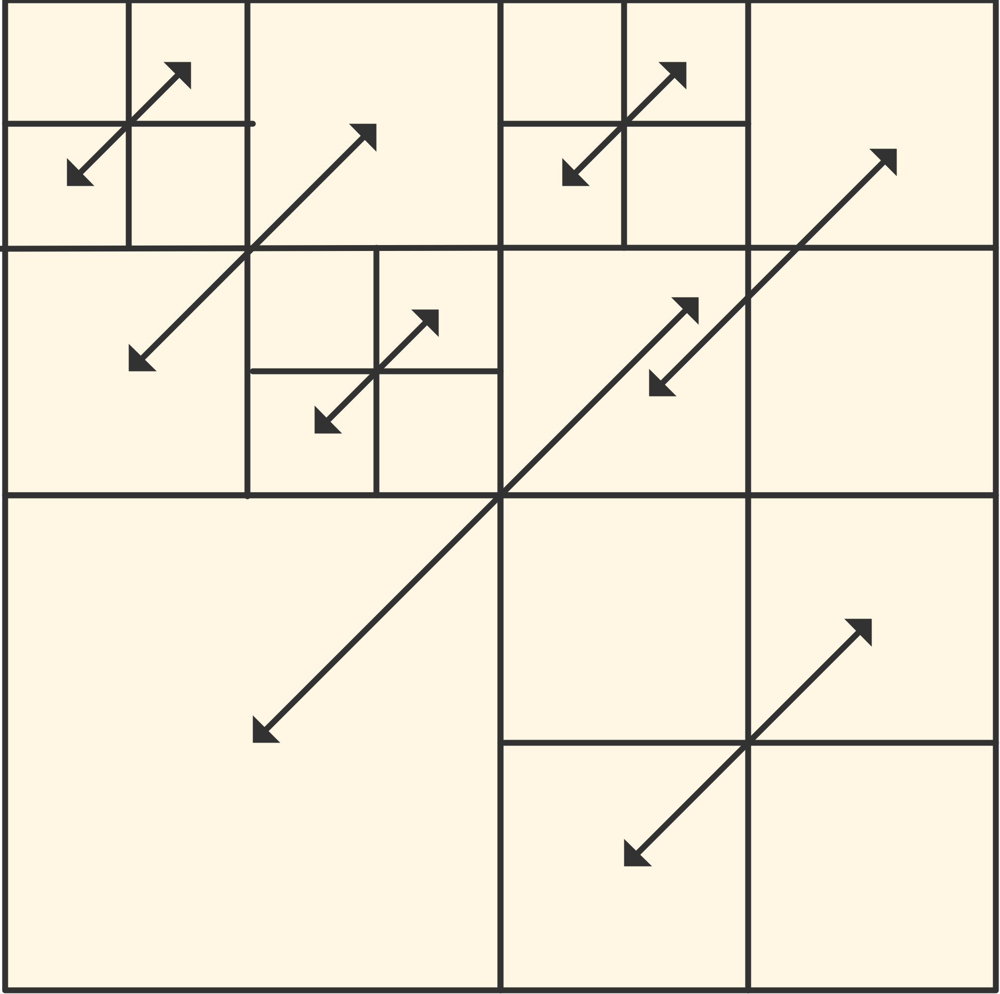

A communicator is an object describing a group of processes. In many applications all processes work together closely coupled, and the only communicator you need is MPI_COMM_WORLD , the group describing all processes that your job starts with.
In this chapter you will see ways to make new groups of MPI processes: subgroups of the original world communicator. Chapter~ MPI topic: Process management discusses dynamic process management, which, while not extending MPI_COMM_WORLD does extend the set of available processes.
crumb trail: > mpi-comm > Basic communicators
There are three predefined communicators:
These values are constants, though not necessarily compile-time constants. Thus, they can not be used in switch statements, array declarations, or constexpr evaluations.
If you don't want to write MPI_COMM_WORLD repeatedly, you can assign that value to a variable of type MPI_Comm .
Examples:
// C: #include <mpi.h> MPI_Comm comm = MPI_COMM_WORLD;
!! Fortran 2008 interface use mpi_f08 Type(MPI_Comm) :: comm = MPI_COMM_WORLD
!! Fortran legacy interface #include <mpif.h> Integer :: comm = MPI_COMM_WORLD
comm = MPI.COMM_WORLD
The environment of MPI_COMM_WORLD and MPI_COMM_SELF :
const communicator& mpl::environment::comm_world(); const communicator& mpl::environment::comm_self();
There doesn't seem to be an equivalent of MPI_COMM_NULL . End of MPL note
You can name your communicators with MPI_Comm_set_name , which could improve the quality of error messages when they arise.
crumb trail: > mpi-comm > Duplicating communicators
With
Semantics: MPI_COMM_DUP(comm, newcomm) MPI_COMM_IDUP(comm, newcomm, request) IN comm: communicator (handle) OUT newcomm: copy of comm (handle) OUT request: request (handle) C: int MPI_Comm_dup(MPI_Comm comm, MPI_Comm *newcomm) int MPI_Comm_idup(MPI_Comm comm, MPI_Comm *newcomm, MPI_Request *request) F: MPI_Comm_dup(comm, newcomm, ierror) MPI_Comm_idup(comm, newcomm, request, ierror) TYPE(MPI_Comm), INTENT(IN) :: comm TYPE(MPI_Comm), INTENT(OUT) :: newcomm TYPE(MPI_Request), INTENT(OUT) :: request INTEGER, OPTIONAL, INTENT(OUT) :: ierror Py: newcomm = oldcomm.Dup(Info info=None)
These calls do not propagate info hints (sections 15.1.1 and~ 15.1.1.2 ); to achieve this, use MPI_Comm_dup_with_info and MPI_Comm_idup_with_info ; section~ 15.1.1.2 .
Communicators can be duplicated but only during initialization. Copy assignment has been deleted. Thus:
// LEGAL: mpl::communicator init = comm; // WRONG: mpl::communicator init; init = comm;
crumb trail: > mpi-comm > Duplicating communicators > Communicator comparing
You may wonder what `an exact copy' means precisely. For this, think of a communicator as a context label that you can attach to, among others, operations such as sends and receives. A send and a receive `belong together' if they have the same communicator context. Conversely, a send in one communicator can not be matched to a receive in a duplicate communicator, made by MPI_Comm_dup .
Testing whether two communicators are really the same is then more than testing if they comprise the same processes. The call MPI_Comm_compare returns MPI_IDENT if two communicator values are the same, and not if one is derived from the other by duplication: \csnippetwithoutput{commcopycompare}{examples/mpi/c}{commcompare}
Communicators that are not actually the same can be
Comparing against MPI_COMM_NULL is not allowed.
crumb trail: > mpi-comm > Duplicating communicators > Communicator duplication for library use
Duplicating a communicator may seem pointless, but it is actually very useful for the design of software libraries. Image that you have a code
MPI_Isend(...); MPI_Irecv(...); // library call MPI_Waitall(...);
and suppose that the library has receive calls. Now it is possible that the receive in the library inadvertently catches the message that was sent in the outer environment.
In section 15.7 it was explained that MPI messages are nonovertaking. This may lead to confusing situations, witness the following. First of all, here is code where the library stores the communicator of the calling program:
// commdupwrong.cxx
class library {
private:
MPI_Comm comm;
int procno,nprocs,other;
MPI_Request request[2];
public:
library(MPI_Comm incomm) {
comm = incomm;
MPI_Comm_rank(comm,&procno);
other = 1-procno;
};
int communication_start();
int communication_end();
};
This models a main program that does a simple message exchange, and it makes two calls to library routines. Unbeknown to the user, the library also issues send and receive calls, and they turn out to interfere.
Here
To prevent this confusion, the library should duplicate the outer communicator with MPI_Comm_dup and send all messages with respect to its duplicate. Now messages from the user code can never reach the library software, since they are on different communicators.
// commdupright.cxx
class library {
private:
MPI_Comm comm;
int procno,nprocs,other;
MPI_Request request[2];
public:
library(MPI_Comm incomm) {
MPI_Comm_dup(incomm,&comm);
MPI_Comm_rank(comm,&procno);
other = 1-procno;
};
library() {
MPI_Comm_free(&comm);
}
int communication_start();
int communication_end();
};
Note how the preceding example performs the MPI_Comm_free cal in a C++ destructor .
## commdup.py
class Library():
def __init__(self,comm):
# wrong: self.comm = comm
self.comm = comm.Dup()
self.other = self.comm.Get_size()-self.comm.Get_rank()-1
self.requests = [ None ] * 2
def communication_start(self):
sendbuf = np.empty(1,dtype=np.int); sendbuf[0] = 37
recvbuf = np.empty(1,dtype=np.int)
self.requests[0] = self.comm.Isend( sendbuf, dest=other,tag=2 )
self.requests[1] = self.comm.Irecv( recvbuf, source=other )
def communication_end(self):
MPI.Request.Waitall(self.requests)
mylibrary = Library(comm)
my_requests[0] = comm.Isend( sendbuffer,dest=other,tag=1 )
mylibrary.communication_start()
my_requests[1] = comm.Irecv( recvbuffer,source=other )
MPI.Request.Waitall(my_requests,my_status)
mylibrary.communication_end()
crumb trail: > mpi-comm > Sub-communicators
In many scenarios you divide a large job over all the available processors. However, your job may have two or more parts that can be considered as jobs by themselves. In that case it makes sense to divide your processors into subgroups accordingly.
Suppose for instance that you are running a simulation where inputs are generated, a computation is performed on them, and the results of this computation are analyzed or rendered graphically. You could then consider dividing your processors in three groups corresponding to generation, computation, rendering. As long as you only do sends and receives, this division works fine. However, if one group of processes needs to perform a collective operation, you don't want the other groups involved in this. Thus, you really want the three groups to be really distinct from each other.
In order to make such subsets of processes, MPI has the mechanism of taking a subset of MPI_COMM_WORLD and turning that subset into a new communicator.
Now you understand why the MPI collective calls had an argument for the communicator: a collective involves all processes of that communicator. By making a communicator that contains a subset of all available processes, you can do a collective on that subset.
The usage is as follows:
crumb trail: > mpi-comm > Sub-communicators > Scenario: distributed linear algebra
For scalability reasons, matrices should often be distributed in a 2D manner, that is, each process receives a subblock that is not a block of columns or rows. This means that the processors themselves are, at least logically, organized in a 2D grid. Operations then involve reductions or broadcasts inside rows or columns. For this, a row or column of processors needs to be in a subcommunicator.
crumb trail: > mpi-comm > Sub-communicators > Scenario: climate model
A climate simulation code has several components, for instance corresponding to land, air, ocean, and ice. You can imagine that each needs a different set of equations and algorithms to simulate. You can then divide your processes, where each subset simulates one component of the climate, occasionally communicating with the other components.
crumb trail: > mpi-comm > Sub-communicators > Scenario: quicksort
The popular quicksort algorithm works by splitting the data into two subsets that each can be sorted individually. If you want to sort in parallel, you could implement this by making two subcommunicators, and sorting the data on these, creating recursively more subcommunicators.
crumb trail: > mpi-comm > Sub-communicators > Shared memory
There is an important application of communicator splitting in the context of one-sided communication, grouping processes by whether they access the same shared memory area; see section 12.1 .
crumb trail: > mpi-comm > Sub-communicators > Process spawning
Finally, newly created communicators do not always need to be subset of the initial MPI_COMM_WORLD . MPI can dynamically spawn new processes (see chapter MPI topic: Process management ) which start in a MPI_COMM_WORLD of their own. However, another communicator will be created that spawns the old and new worlds so that you can communicate with the new processes.
crumb trail: > mpi-comm > Splitting a communicator
Above we saw several scenarios where it makes sense to divide MPI_COMM_WORLD into disjoint subcommunicators. The command
Semantics:
MPI_COMM_SPLIT(comm, color, key, newcomm)
IN comm: communicator (handle)
IN color: control of subset assignment (integer)
IN key: control of rank assigment (integer)
OUT newcomm: new communicator (handle)
C:
int MPI_Comm_split(
MPI_Comm comm, int color, int key,
MPI_Comm *newcomm)
F:
MPI_Comm_split(comm, color, key, newcomm, ierror)
TYPE(MPI_Comm), INTENT(IN) :: comm
INTEGER, INTENT(IN) :: color, key
TYPE(MPI_Comm), INTENT(OUT) :: newcomm
INTEGER, OPTIONAL, INTENT(OUT) :: ierror
MPI_COMM_SPLIT(COMM, COLOR, KEY, NEWCOMM, IERROR)
INTEGER COMM, COLOR, KEY, NEWCOMM, IERROR
Py:
newcomm = comm.Split(int color=0, int key=0)
The ranking of processes in the new communicator is determined by a `key' value: in a subcommunicator the process with lowest key is given the lowest rank, et cetera. Most of the time, there is no reason to use a relative ranking that is different from the global ranking, so the MPI_Comm_rank value of the global communicator is a good choice. Any ties between identical key values are broken by using the rank from the original communicator. Thus, specifying zero are the key will also retain the original process ordering.
Here is one example of communicator splitting. Suppose your processors are in a two-dimensional grid:
MPI_Comm_rank( MPI_COMM_WORLD, &mytid ); proc_i = mytid % proc_column_length; proc_j = mytid / proc_column_length;
You can now create a communicator per column:
MPI_Comm column_comm; MPI_Comm_split( MPI_COMM_WORLD, proc_j, mytid, &column_comm );
and do a broadcast in that column:
MPI_Bcast( data, /* tag: */ 0, column_comm );
Because of the SPMD nature of the program, you are now doing in parallel a broadcast in every processor column. Such operations often appear in dense linear algebra .
In Python, the `key' argument is optional:
## commsplit.py mydata = procid # communicator modulo 2 color = procid%2 mod2comm = comm.Split(color) new_procid = mod2comm.Get_rank() # communicator modulo 4 recursively color = new_procid%2 mod4comm = mod2comm.Split(color) new_procid = mod4comm.Get_rank()
In MPL , splitting a communicator is done as one of the overloads of the communicator constructor;
// commsplit.cxx // create sub communicator modulo 2 int color2 = procno % 2; mpl::communicator comm2( mpl::communicator::split, comm_world, color2 ); auto procno2 = comm2.rank(); // create sub communicator modulo 4 recursively int color4 = procno2 % 2; mpl::communicator comm4( mpl::communicator::split, comm2, color4 ); auto procno4 = comm4.rank();
is an object of class communicator:: split_tag itself is an otherwise empty subclass of communicator
class split_tag {};
static constexpr split_tag split{};
There is also a routine MPI_Comm_split_type which uses a type rather than a key to split the communicator. We will see this in action in section 12.1 .
FIGURE 7.1: Row and column broadcasts in subcommunicators
crumb trail: > mpi-comm > Splitting a communicator > Examples
One application of communicator splitting is setting up a processor grid, with the possibility of using MPI solely within one row or column; see figure 7.1 .
Organize your processes in a grid, and make subcommunicators for the rows and columns. For this compute the row and column number of each process.
In the row and column communicator, compute the rank. For instance, on a $2\times3$ processor grid you should find:
Global ranks: Ranks in row: Ranks in colum: 0 1 2 0 1 2 0 0 0 3 4 5 0 1 2 1 1 1
Check that the rank in the row communicator is the column number, and the other way around.
Run your code on different number of processes, for instance a number of rows and columns that is a power of 2, or that is a prime number.
This is one occasion where you could use ibrun -np 9 ; normally you would never put a processor count on ibrun .
As another example of communicator splitting, consider the recursive algorithm for matrix transposition . Processors are organized in a square grid. The matrix is divided on $2\times 2$ block form.
Implement a recursive algorithm for matrix transposition:

crumb trail: > mpi-comm > Communicators and groups
You saw in section~ 7.4 that it is possible derive communicators that have a subset of the processes of another communicator. There is a more general mechanism, using MPI_Group objects.
Using groups, it takes three steps to create a new communicator:
Synopsis int MPI_Comm_group(MPI_Comm comm, MPI_Group *group) Input Parameters: comm : Communicator (handle) Output Parameters group : Group in communicator (handle)
Synopsis MPI_Comm_create( MPI_Comm comm, MPI_Group group, MPI_Comm *newcomm ) Input parameters: comm : Communicator (handle). group : Group, which is a subset of the group of comm (handle). Output parameters: newcomm : New communicator (handle). C: int MPI_Comm_create(MPI_Comm comm, MPI_Group group, MPI_Comm *newcomm) Fortran90: MPI_COMM_CREATE(COMM, GROUP, NEWCOMM, IERROR) INTEGER COMM, GROUP, NEWCOMM, IERROR Fortran2008: MPI_Comm_create(comm, group, newcomm, ierror) TYPE(MPI_Comm), INTENT(IN) :: comm TYPE(MPI_Group), INTENT(IN) :: group TYPE(MPI_Comm), INTENT(OUT) :: newcomm INTEGER, OPTIONAL, INTENT(OUT) :: ierror
Creating a new communicator from a group is collective on the old communicator. There is also a routine MPI_Comm_create_group that only needs to be called on the group that constitutes the new communicator.
crumb trail: > mpi-comm > Communicators and groups > Process groups
Groups are manipulated with
MPI_Comm_group (comm, group, ierr) MPI_Comm_create (MPI_Comm comm,MPI_Group group, MPI_Comm newcomm, ierr)
MPI_Group_union(group1, group2, newgroup, ierr) MPI_Group_intersection(group1, group2, newgroup, ierr) MPI_Group_difference(group1, group2, newgroup, ierr)
MPI_Group_size(group, size, ierr) MPI_Group_rank(group, rank, ierr)
Certain MPI types, MPI_Win and MPI_File , are created on a communicator. While you can not directly extract that communicator from the object, you can get the group with MPI_Win_get_group and MPI_File_get_group .
crumb trail: > mpi-comm > Communicators and groups > Example
Suppose you want to split the world communicator into one manager process, with the remaining processes workers.
// portapp.c
MPI_Comm comm_work;
{
MPI_Group group_world,group_work;
MPI_Comm_group( comm_world,&group_world );
int manager[] = {0};
MPI_Group_excl( group_world,1,manager,&group_work );
MPI_Comm_create( comm_world,group_work,&comm_work );
MPI_Group_free( &group_world ); MPI_Group_free( &group_work );
}
crumb trail: > mpi-comm > Inter-communicators
In several scenarios it may be desirable to have a way to communicate between communicators. For instance, an application can have clearly functionally separated modules (preprocessor, simulation, postprocessor) that need to stream data pairwise. In another example, dynamically spawned processes (section~ 8.1 ) get their own value of MPI_COMM_WORLD , but still need to communicate with the process(es) that spawned them. In this section we will discuss the serves such use cases.
Communicating between disjoint communicators can of course be done by having a communicator that overlaps them, but this would be complicated: since the `inter' communication happens in the overlap communicator, you have to translate its ordering into those of the two worker communicators. It would be easier to express messages directly in terms of those communicators, and this is what happens in an
FIGURE 7.2: Illustration of ranks in an inter-communicator setup
A call to
Synopsis:
int MPI_Intercomm_create
(MPI_Comm local_comm, int local_leader,
MPI_Comm peer_comm, int remote_leader,
int tag, MPI_Comm *newintercomm
);
Input parameters:
local_comm : Local (intra)communicator
local_leader : Rank in local_comm of leader (often 0)
peer_comm : Communicator used to communicate between a designated process in
the other communicator. Significant only at the process in local_comm
with rank local_leader.
remote_leader : Rank in peer_comm of remote leader (often 0)
tag : Message tag to use in constructing intercommunicator; if multiple
MPI_Intercomm_creates are being made, they should use different tags
(more precisely, ensure that the local and remote leaders are using
different tags for each MPI_intercomm_create).
Output Parameter:
comm_out : Created intercommunicator
Even though the intercommunicator connects only two proceses, it is collective on the peer communicator.
crumb trail: > mpi-comm > Inter-communicators > Inter-communicator point-to-point
The local leaders can now communicate with each other.
In one way, this design makes sense: processors are referred to in their natural, local, numbering. On the other hand, it means that each group needs to know how the local ordering of the other group is arranged. Using a complicated key value makes this difficult.
if (i_am_local_leader) {
if (color==0) {
interdata = 1.2;
int inter_target = local_number_of_other_leader;
printf("[%d] sending interdata %e to %d\n",
procno,interdata,inter_target);
MPI_Send(&interdata,1,MPI_DOUBLE,inter_target,0,intercomm);
} else {
MPI_Status status;
MPI_Recv(&interdata,1,MPI_DOUBLE,MPI_ANY_SOURCE,MPI_ANY_TAG,intercomm,&status);
int inter_source = status.MPI_SOURCE;
printf("[%d] received interdata %e from %d\n",
procno,interdata,inter_source);
if (inter_source!=local_number_of_other_leader)
fprintf(stderr,
"Got inter communication from unexpected %d; s/b %d\n",
inter_source,local_number_of_other_leader);
}
}
crumb trail: > mpi-comm > Inter-communicators > Inter-communicator collectives
The intercommunicator can be used in collectives such as a broadcast.
Gather and scatter behave similarly; the allgather is different: all send buffers of group~A are concatenated in rank order, and places on all processes of group~B.
Inter-communicators can be used if two groups of process work asynchronously with respect to each other; another application is fault tolerance (section~ 15.5 ).
if (color==0) { // sending group: the local leader sends
if (i_am_local_leader)
root = MPI_ROOT;
else
root = MPI_PROC_NULL;
} else { // receiving group: everyone indicates leader of other group
root = local_number_of_other_leader;
}
if (DEBUG) fprintf(stderr,"[%d] using root value %d\n",procno,root);
MPI_Bcast(&bcast_data,1,MPI_INT,root,intercomm);
crumb trail: > mpi-comm > Inter-communicators > Inter-communicator querying
Some of the operations you have seen before for
Spawned processes can find their parent communicator with
Test whether a communicator is intra or inter:
MPI_COMM_TEST_INTER(comm, flag) IN comm : communicator (handle) OUT flag : (logical) int MPI_Comm_test_inter(MPI_Comm comm, int *flag) MPI_COMM_TEST_INTER(COMM, FLAG, IERROR) INTEGER COMM, IERROR LOGICAL FLAG
works for inter-communicators.
Processes connected through an intercommunicator can query the size of the `other' communicator with
Semantics: MPI_COMM_REMOTE_SIZE(comm, size) IN comm: inter-communicator (handle) OUT size: number of processes in the remote group of comm (integer) C: int MPI_Comm_remote_size(MPI_Comm comm, int *size) Fortran: MPI_Comm_remote_size(comm, size, ierror) TYPE(MPI_Comm), INTENT(IN) :: comm INTEGER, INTENT(OUT) :: size INTEGER, OPTIONAL, INTENT(OUT) :: ierror Python: Intercomm.Get_remote_size(self)
Semantics: MPI_COMM_REMOTE_GROUP(comm, group) IN comm: inter-communicator (handle) OUT group: group of processes in the remote group of comm C: int MPI_Comm_remote_group(MPI_Comm comm, MPI_Group *group) Fortran: MPI_Comm_remote_group(comm, group, ierror) TYPE(MPI_Comm), INTENT(IN) :: comm TYPE(MPI_Group), INTENT(OUT) :: group INTEGER, OPTIONAL, INTENT(OUT) :: ierror Python: Intercomm.Get_remote_group(self)
Virtual topologies (chapter~ MPI topic: Topologies ) cannot be created with an intercommunicator. To set up virtual topologies, first transform the intercommunicator to an intracommunicator with the function
Synopsis:
int MPI_Intercomm_merge
(MPI_Comm intercomm, int high,
MPI_Comm *newintracomm)
Input Parameters:
intercomm : Intercommunicator (handle)
high : Used to order the groups within comm (logical) when creating the new
communicator. This is a boolean value; the group that sets high true
has its processes ordered after the group that sets this value to
false. If all processes in the intercommunicator provide the same
value, the choice of which group is ordered first is arbitrary.
Output Parameters:
newintracomm : Created intracommunicator (handle)
\newpage
crumb trail: > mpi-comm > Review questions
For all true/false questions, if you answer that a statement is false, give a one-line explanation.